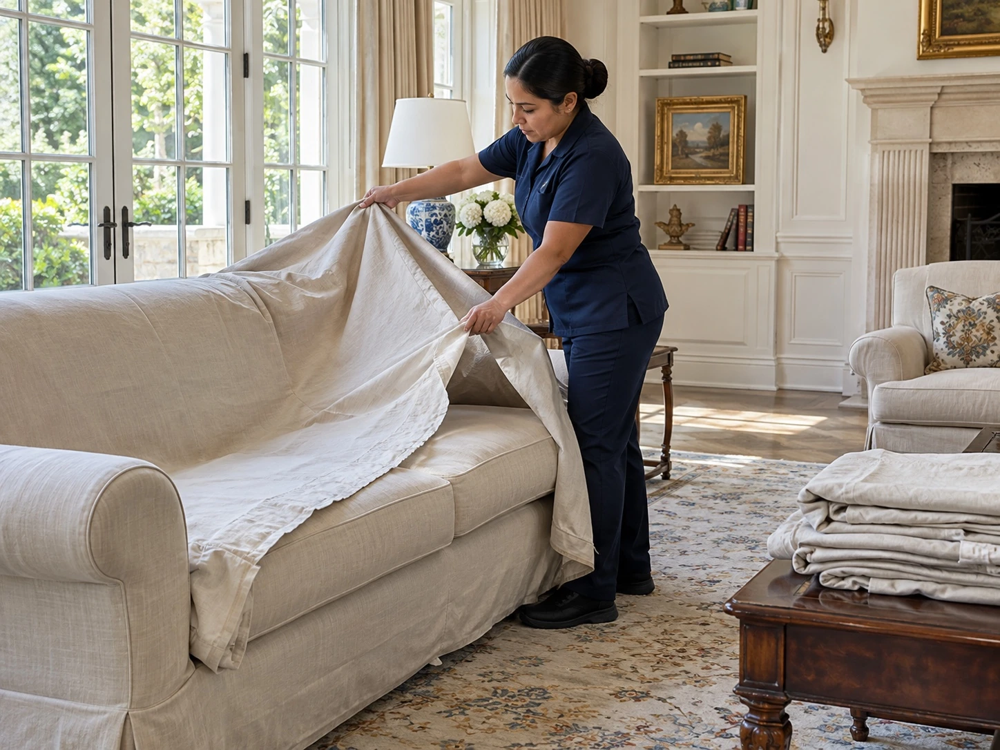

Clean Spaces
The estate is only occupied part of the year. How often should it still be cleaned when no one is staying there?

Set a baseline before the property is closed
Start with a walkthrough that records the condition of the rooms, floors, glass, and accessible surfaces. Note which buildings will stay closed and which staff or contractors will continue visiting. A room that remains unused has different cleaning needs from a service entrance used every week. The initial plan should name a review date so the first interval can be changed after the property’s actual conditions are known.
Separate a property check from a full cleaning visit
A brief property check does not mean every room needs a complete clean. The estate manager can use observations and photographs to identify where dust, footprints, or other ordinary buildup is returning. Cleaning can then focus on those areas while quieter spaces stay on a longer rotation. Maintenance concerns should go to the responsible property professional rather than being treated as ordinary cleaning tasks.
Account for the people who still enter the estate
Gardeners, repair crews, deliveries, and other staff may use routes through an otherwise unoccupied property. Record which doors, hallways, and work areas remain active so the cleaning team can cover them. Ask contractors to report when their work is complete before scheduling final detail cleaning in that area. Otherwise, a room may be cleaned and then immediately disturbed again.
Schedule the arrival clean separately
Before owners or guests return, confirm which rooms and buildings will be used and when access will be available. Plan the preparation clean after disruptive maintenance is complete, with time to review the finished work before arrival. Compare that visit with the earlier condition records. If there is much more buildup than expected, shorten the maintenance interval; if conditions stay stable, discuss whether the current scope can be reduced.